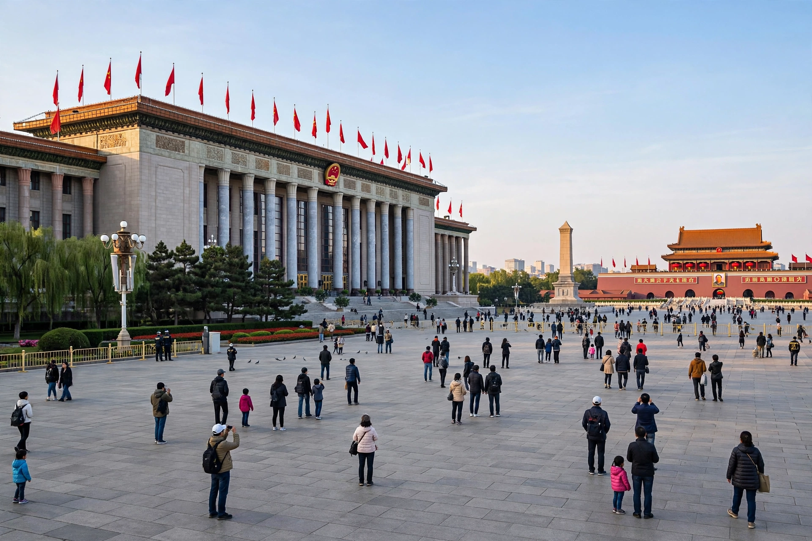

The Chinese Communist Party (CCP), officially the Communist Party of China (CPC), is the founding and ruling political party of the People's Republic of China. Founded in Shanghai in 1921 with assistance from the Comintern, the party won the Chinese Civil War and established the PRC in 1949. With more than 98 million members, it is the world's second-largest political party and the largest ruling party, and it exercises comprehensive control over the Chinese state, military, media, and judiciary.

| Chinese Communist Party | |
|---|---|
| Founded | 23 July 1921, Shanghai (First Congress) |
| Founders | Chen Duxiu, Li Dazhao, and others |
| Membership | ~98 million (2023) |
| Ideology | Marxism-Leninism as adapted by successive leadership doctrines; socialism with Chinese characteristics |
| Leader | General Secretary (Xi Jinping since 2012) |
| Newspaper | People's Daily |
The CCP grew out of May Fourth Movement study circles and held its First Congress in 1921 aboard a boat on South Lake in Jiaxing. After an initial alliance with the Kuomintang collapsed into the 1927 Shanghai massacre, the party retreated to rural soviets, survived the Long March (1934–35) — during which Mao Zedong became its leader — and expanded greatly during the war against Japan. Victorious in 1949, it ruled under Mao through campaigns including the Great Leap Forward and the Cultural Revolution. After 1978, Deng Xiaoping redirected the party toward market-oriented development while preserving its monopoly on power.
The party is organised on Leninist principles of democratic centralism, with party committees paralleling every level of government and embedded in state organs, the military, universities, and many private firms. Formally, the National Congress (held every five years) elects a Central Committee, which elects the Politburo and its Standing Committee — the apex of power, headed by the General Secretary. In practice, real authority concentrates at the top.
Official ideology layers successive leaders' doctrines: Marxism-Leninism and Mao Zedong Thought, Deng Xiaoping Theory, Jiang Zemin's "Three Represents", Hu Jintao's "Scientific Outlook on Development", and Xi Jinping Thought, enshrined in the party constitution in 2017. The party describes China's system as "socialism with Chinese characteristics".
The CCP controls the People's Liberation Army through the Central Military Commission and appoints all senior state officials through its nomenklatura system. Eight minor "democratic parties" exist but accept CCP leadership. Since 2012, Xi Jinping has centralised authority, abolished presidential term limits, and waged a far-reaching anti-corruption campaign.
Membership requires a lengthy application and probation process and is selective — applicants are drawn largely from university students, officials, professionals, and soldiers. Members are expected to pay dues, attend party activities, and model official values.